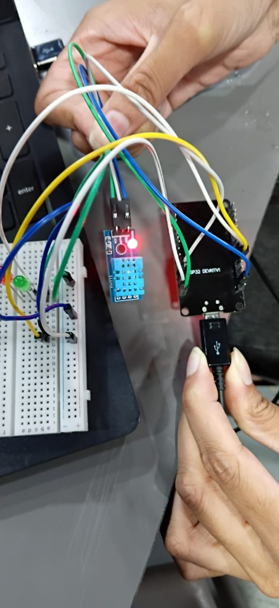
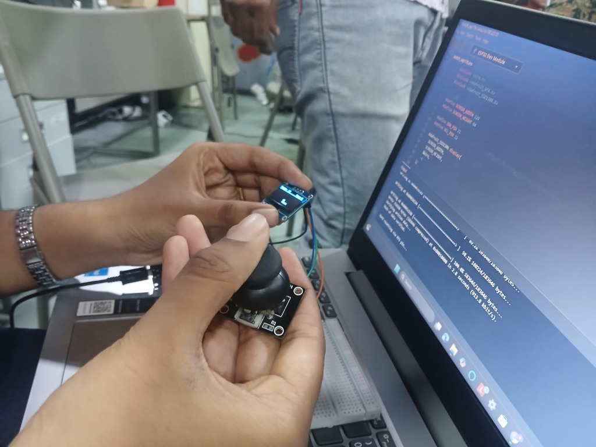
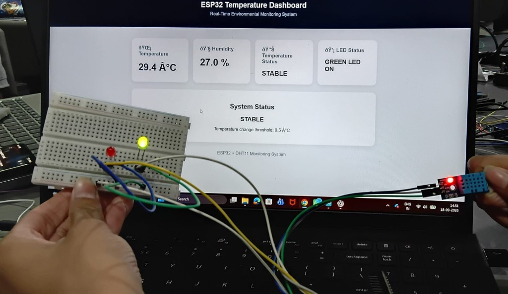
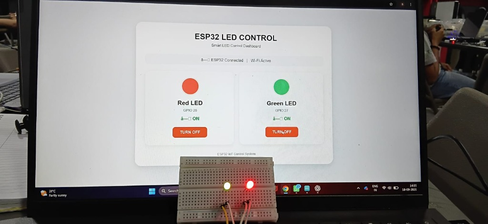

Week 4 – Embedded Systems, Sensors and IoT Development
Week 4 focused on computational hardware, Arduino Uno, microcontrollers, sensors, actuators, communication protocols, IoT, Chrome extensions, and the development of a smart room model.
Week 4 expanded our hardware engineering toolkit into the domain of intelligent embedded systems and interconnected Internet of Things (IoT) architectures. We transitioned from passive discrete components to programmable microcontrollers, investigating how the Arduino Uno and embedded processing platforms interpret sensory inputs, coordinate hardware buses, and execute deterministic control logic.
Throughout the week, we mastered digital and analog sensor interfacing, bus-level communication protocols (UART, I²C, SPI), motion sensing with the MPU6050, robotic actuation using the SG90 servo motor, Chrome extension browser integration, and constructed a fully operational Smart Room Model featuring real-time environmental telemetry and live browser automation.
Computational Hardware and System Integration
Different electronic and computational hardware components must operate in tight synchronization to create cohesive, reliable functional systems. System integration connects low-level electrical distribution (voltage regulators, decoupling capacitors, ground planes) with high-level processing logic and peripheral transducers.
By establishing structured power rails, matching signal impedance, preventing ground loops, and coordinating clock signals, diverse subsystems — ranging from delicate analog sensors to high-current actuators and communication transceivers — can exchange data accurately without electrical noise or signal degradation.
Arduino Uno and Board Components
The Arduino Uno is an industry-standard open-source microcontroller board based on the Microchip ATmega328P. We analyzed each hardware component to understand its specific role in embedded prototyping:
8-bit AVR RISC processor operating at 16 MHz with 32 KB flash memory, 2 KB SRAM, and 1 KB EEPROM.
14 digital pins for binary input/output; 6 pins provide 8-bit Pulse Width Modulation (PWM ~3, 5, 6, 9, 10, 11).
6 analog channels connected to a 10-bit Analog-to-Digital Converter (ADC) mapping 0–5V to values 0–1023.
Regulated 5V, 3.3V, GND reference pins, and Vin input supporting 7–12V external barrel-jack power supply.
Type-B USB port for firmware flashing and Serial UART telemetry; 16 MHz quartz crystal for timing; and momentary hardware reset switch.
Microcontrollers and Electronic Components
Microcontrollers act as the cognitive core of embedded systems. They continually sample electrical signals from connected sensors, interpret those readings through software logic stored in flash memory, and assert precise digital or PWM control voltages to actuate external components.
In our hands-on prototyping session, we interfaced microcontrollers with breadboard circuits, wiring pull-up resistors, digital temperature/humidity sensors (DHT11), and status indicators. The microcontroller's internal GPIO registers allow millisecond-level responsiveness to real-time environmental variations.

"Microcontroller and circuit integration — connecting the development board to a DHT11 environmental sensor and breadboard indicator LEDs."
Embedded Hardware Session • Microcontroller GPIO & Digital Sensor Interfacing
Chrome Extension Development
We explored Google Chrome Extensions, which are lightweight software modules built using core web technologies (HTML, CSS, JavaScript) to extend browser functionality and customize user workflows.
We studied the Manifest V3 extension architecture:
- Manifest.json: Declares permissions, background service workers, and UI entry points.
- Background Service Worker: Event-driven background script managing lifecycle events and network requests.
- Popup UI & Side Panels: Interactive lightweight dashboards providing instant user controls.
- Hardware Bridge Potential: Connecting browser tabs with Web Serial or local WebSocket APIs to monitor and trigger IoT hardware directly from browser tabs.
Sensors, Actuators, and Communication Protocols
In embedded design, sensors convert physical parameters (temperature, light, orientation) into electrical signals, while actuators convert electrical command signals into physical movement or illumination. To communicate with these peripherals, microcontrollers use dedicated hardware protocols:
Universal Asynchronous Receiver-Transmitter
Asynchronous point-to-point serial communication using separate TX (transmit) and RX (receive) lines at agreed baud rates (e.g. 9600, 115200) without a shared clock.
Inter-Integrated Circuit Bus
Synchronous multi-device bus using only two shared lines: SDA (Serial Data) and SCL (Serial Clock) with 7-bit device addressing. Ideal for displays and sensor modules.
Serial Peripheral Interface
High-speed full-duplex synchronous 4-wire bus: MOSI, MISO, SCK (clock), and SS/CS (slave select). Ideal for high-bandwidth displays, flash memory, and SD cards.

"Interactive input and display integration via I²C bus — connecting an analog joystick and 0.96-inch OLED display (SSD1306) with SDA/SCL lines."
Arduino IDE Code Flashing • I²C Bus Peripheral Interfacing (SDA 21, SCL 22)
MPU6050 Motion Sensor
The MPU6050 is a versatile 6-axis MotionTracking device that combines a 3-axis accelerometer and a 3-axis gyroscope on a single silicon die.
The accelerometer measures gravitational and linear acceleration along the X, Y, and Z axes, while the gyroscope measures rotational angular velocity (degrees per second). Communicating via the I²C bus, the MPU6050 features an onboard Digital Motion Processor (DMP) capable of computing complex sensor-fusion algorithms to calculate pitch, roll, and yaw angles. This makes it foundational for robotics self-balancing, aerial drone stabilization, gesture controls, and orientation-aware IoT devices.
Captures static tilt angles and dynamic linear acceleration forces.
Measures rapid rotational orientation changes without gravitational latency.
SG90 Servo Motor
The SG90 9g micro servo motor uses pulse-width modulation (PWM) control signals to rotate and hold its output shaft at exact angular positions within a 0° to 180° range.
Inside the servo, an internal potentiometer monitors shaft position, creating a closed-loop feedback mechanism with an error amplifier that continuously compares the incoming pulse width (typically 1.0 ms for 0°, 1.5 ms for 90°, and 2.0 ms for 180°) against the physical position. This precision makes the SG90 invaluable for smart lock latches, automated door gates, camera pan-tilt mechanisms, and robotic grippers.
Internet of Things (IoT)
The Internet of Things (IoT) bridges physical hardware with digital networks. By connecting sensors, microcontrollers, communication protocols, and actuators to web dashboards, physical spaces transform into intelligent, self-monitoring environments.
We explored the complete IoT pipeline: microcontrollers collect physical readings from sensors (temperature, humidity), process the raw values, and transmit live telemetry data via HTTP endpoints or WebSockets to a web browser dashboard. When threshold conditions are met, the system can trigger automated actuator responses or allow operators to send commands back to the hardware.

"Real-time IoT environmental monitoring dashboard displaying live temperature (29.4°C), relative humidity (27.0%), and hardware threshold status."
IoT Telemetry System • ESP32 & DHT11 Live Web Dashboard Interface
Smart Room Model
In our hands-on practical activity, I worked on developing a Smart Room Model, exploring how disparate hardware components can be integrated into an automated, interactive environment.
The system incorporated an embedded development board wired to a breadboard circuit with room indicator lights (Red LED on GPIO 26, Green LED on GPIO 27) and environmental sensors. We created a real-time web control panel (Smart LED Control Dashboard) that allowed users to monitor room conditions and remotely toggle room lights directly from a computer browser interface, confirming successful bi-directional hardware-to-software communication.

"Smart Room Model IoT dashboard — interactive browser interface controlling GPIO-driven red and green room status LEDs in real time."
Smart Room Implementation • Browser-to-Hardware Bi-Directional IoT Automation
Week 4 Activity Photo Gallery
Comprehensive photographic documentation of Week 4 embedded systems, IoT development, and smart room prototyping. Below, your practical activity photographs are organized across all 9 curriculum topics. Click any photograph to view it in high-resolution lightbox view.
Computational Hardware & Interfacing
Power management, microcontroller compute units, and peripheral subsystem integration.
Development Board Architecture
Microcontroller core, digital/PWM pins, analog inputs, and USB communication link.
Circuit Interconnections & Sensors
Live breadboard wiring with pull-up resistors, DHT11 environmental sensor, and status LEDs.
Manifest V3 Extension Architecture
Studied browser extension workflows, background service workers, popup controls, and hardware bridging APIs.
Ready for photo:images/week4/chrome-extension-dev.jpg
I²C Bus Peripheral Communication
Two-wire I²C bus driving SSD1306 OLED display alongside analog joystick coordinate sensing.
6-Axis Accelerometer & Gyroscope
Learned spatial motion tracking, angular velocity, and Digital Motion Processor (DMP) sensor fusion.
Ready for photo:images/week4/mpu6050-sensor.jpg
PWM Closed-Loop Position Control
Studied 0°–180° angular shaft rotation via pulse-width modulation for automated mechanical actuation.
Ready for photo:images/week4/sg90-servo-motor.jpg
Real-Time Environmental Telemetry
Live web dashboard streaming temperature (29.4°C), humidity (27.0%), and alert status.
Smart Room Model Remote LED Control
Interactive browser dashboard toggling room lighting actuators on GPIO 26 and GPIO 27 with active visual feedback.
Key Takeaways & Milestones
Computational Hardware & Embedded Systems
Understood how computational processing cores, power distribution, and peripheral interfaces integrate to build responsive embedded systems.
Arduino Uno Components & Pin Functions
Mastered ATmega328P architecture, 14 digital pins, 6 PWM channels, 10-bit analog ADC pins, power regulation, and serial programming headers.
Sensors, Actuators & Microcontrollers
Explored closed-loop sensing and actuation, transforming environmental stimuli into digital metrics and controlling physical output devices.
UART, I²C, and SPI Protocols
Learned differences between asynchronous serial UART, two-wire shared bus I²C (SDA/SCL), and high-speed synchronous multi-line SPI buses.
MPU6050 Motion Sensor & SG90 Servo
Applied 6-axis accelerometer/gyroscope motion measurement alongside precision 0–180° PWM closed-loop servo motor positioning.
IoT Fundamentals & Applications
Learned how connected IoT nodes stream real-time sensor metrics to cloud/web endpoints to enable intelligent monitoring and automation.
Chrome Extension Development
Explored browser extension architecture (Manifest V3, background workers, popups) and its potential as an interactive hardware bridge.
Smart Room Automation Model
Constructed a functional prototype integrating environmental telemetry and browser-controlled GPIO actuators in an automated room setup.
Topics & Keywords Covered
PRICE ProtoSem Archive
Explore previous weeks or return to portfolio